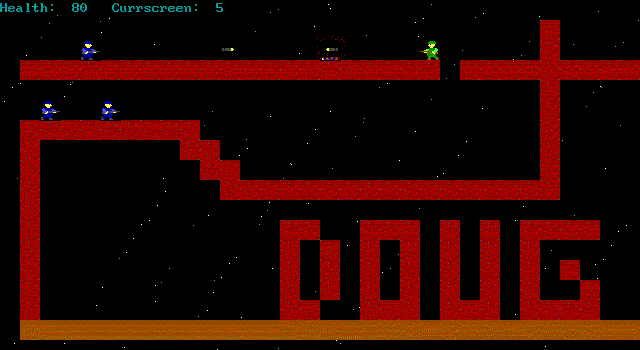
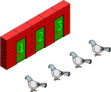

<!doctype html>
<html lang="en">
  <head>
    <meta charset="utf-8">

    <title>Introduction to Blockchain Security Practices</title>

    <meta name="author" content="Doug Hoyte">

    <meta name="apple-mobile-web-app-capable" content="yes" />
    <meta name="apple-mobile-web-app-status-bar-style" content="black-translucent" />

    <meta name="viewport" content="width=device-width, initial-scale=1.0, maximum-scale=1.0, user-scalable=no, minimal-ui">

    <link rel="stylesheet" href="../reveal.js/css/reveal.css">
    <link rel="stylesheet" href="../reveal.js/css/theme/black.css" id="theme">

    <!-- Code syntax highlighting -->
    <link rel="stylesheet" href="../reveal.js/lib/css/zenburn.css">

    <!-- Printing and PDF exports -->
    <script>
      var link = document.createElement( 'link' );
      link.rel = 'stylesheet';
      link.type = 'text/css';
      link.href = window.location.search.match( /print-pdf/gi ) ? '../reveal.js/css/print/pdf.css' : '../reveal.js/css/print/paper.css';
      document.getElementsByTagName( 'head' )[0].appendChild( link );
    </script>

    <!--[if lt IE 9]>
    <script src="../reveal.js/lib/js/html5shiv.js"></script>
    <![endif]-->

    <style>
      .reveal .slides h1, .reveal .slides h2, .reveal .slides h3 {
        text-transform: none;
      }

      .two-column {
        display: flex;
        flex-wrap: wrap;
      }

      .two-column em {
        margin: 20px;
      }
    </style>
  </head>

  <body>
    <div class="reveal">
      <div class="slides">

<!------------------------------------------------------->


<section data-markdown><script type="text/template">

## Introduction to Blockchain Security Practices

### Lesson 1: Cryptographic Primitives

*Doug Hoyte, March 2019*

</script></section>


<section data-markdown><script type="text/template">

## Lesson Topics

* Randomness
* Hash functions
* Signatures

</script></section>


<section data-markdown><script type="text/template">

## Randomness

* Without randomness, all operations would be predictable, and therefore insecure
* Cryptography (and blockchains) could not exist
* Needed for generating secret keys, encryption protocols, and more

</script></section>


<section data-markdown><script type="text/template">

"Any one who considers arithmetical methods of producing random digits is, of course, in a state of sin. For, as has been pointed out several times, there is no such thing as a random number — there are only methods to produce random numbers, and a strict arithmetic procedure of course is not such a method."

—John von Neumann

</script></section>


<section data-markdown><script type="text/template">

## True random processes

* Thermal noise
* Radioactive decay
* Network packet arrival times
* Wiggling mouse/pounding on keyboard (?)
 
</script></section>


<section data-markdown><script type="text/template">

## Pseudo-randomness

* PRNG (Pseudo-Random Number Generator)
  * Deterministic process that generates numbers
* CSPRNG (Cryptographically Secure PRNG)
  * Must be unpredictable and unbiased
  * "Stretches" the randomness from a "seed" (small value from a true RNG)

</script></section>


<section data-markdown><script type="text/template">

## Random mistake 1: Bad RNGs

Linear Congruential Generator (LCG)



</script></section>


<section data-markdown><script type="text/template">

## Random mistake 2: Small seeds

* If your seed is 32 bits you will only have <pre>2<sup>32</sup> = ~4 billion</pre> different possible sequences
* Easily breakable , even if PRNG is strong
* Use at least 128 bits of randomness for your seeds

</script></section>


<section data-markdown><script type="text/template">

## Random mistake 3: Mod bias

    function rollD6() {
        return 1 + (getRandom() % 6);
    }

* Depending on the output range of `getRandom()`, `rollD6()` will be biased
* Why?

</script></section>


<section data-markdown><script type="text/template">

## Demos

* [dice.html](dice.html)
* [randviz.html](randviz.html)

</script></section>


<section data-markdown><script type="text/template">

## Moral of the story

* For crypto, always use a secure random number generator provided by your environment or OS
  * Web-browser: `window.crypto.getRandomValues()`
  * Linux/OS X: `/dev/urandom`
  * Windows: `RtlGenRandom`

</script></section>


<section data-markdown><script type="text/template">

## 15 minute break

</script></section>


<section data-markdown><script type="text/template">

## Principle: Computational Infeasability

* Relied on by all practical cryptography
* If attackers could try every possible random value, they could crack your crypto-system
* So, we make sure there are so many possible random values that it would take "forever" for them to do so

</script></section>


<section data-markdown><script type="text/template">

## Hash functions

* The core building block of blockchains
* Functions that take an unlimited-size input message $m$ and return a fixed size output $h$:

$h = H(m)$

</script></section>


<section data-markdown><script type="text/template">

## Preimage-resistance

* Hashing is a "one-way" function
* If you only know the hash of a secret, it's hard to find that secret
* Formally: given an arbitrary $h$, it is computationally infeasible to find an $m$ such that $H(m) = h$

</script></section>


<!--
<section data-markdown><script type="text/template">

## Second preimage-resistance
 
* Hard to find another message that hashes the same as your message
* Given $m$, it should be hard to find a distinct $m'$ such that $H(m) = H(m')$

</script></section>
-->


<section data-markdown><script type="text/template">

## Hashing mistake 1: Small preimage domain

* Be careful when anonymizing names/IPs/emails/etc by hashing
* If there aren't that many possible secrets, you can just try all of them
* Lab 1: [preimage.html](preimage.html)
* So much for "one-way" function
 
</script></section>


<section data-markdown><script type="text/template">

## Collision-resistance

* Hard to find any two messages that hash to the same value
* Formally: Computationally infeasible to find distinct $m$ and $m'$ such that $H(m) = H(m')$
* We know *all* hash functions have collisions because...

</script></section>


<section data-markdown><script type="text/template">

## Pigeon-hole principle



</script></section>


<section data-markdown><script type="text/template">

## Collision attacks

* Hash functions are almost always attacked by finding collisions, not specific preimages
* MD5 and SHA1 are insecure because it is easier than it should be to find collisions
  * Both are still practically secure against preimage attacks
* Why is it easier to find collisions?

</script></section>


<section data-markdown><script type="text/template">

## Birthday experiment

* Doesn't always work, but it's fun when it does

</script></section>


<section data-markdown><script type="text/template">

## Rho method (tortoise and hare)

* Memory-efficient way to search for collisions
* Named because it looks like greek letter <b><i>ρ</i></b>


</script></section>


<section data-markdown><script type="text/template">

## Hashing mistake 2: Equivalent inputs

    function uniqueUserId(username, accountId) {
        return sha1(username + accountId);
    }

`uniqueUserId("john", 234)`

`uniqueUserId("john2", 34)`

</script></section>


<section data-markdown><script type="text/template">

## Hashing mistake 3: Length extension

* With older hash functions, given a hash you can add data to the end of an unknown preimage and compute a valid hash for it:
  * MD5, SHA1, SHA2-256
* Doesn't have this problem:
  * SHA3, Keccak, BLAKE2, SHA2-512/256, double SHA2-256 (see bitcoin)

</script></section>


<section data-markdown><script type="text/template">

## 15 minute break

</script></section>


<section data-markdown><script type="text/template">

## Kerckhoffs's principle

* Everything about how a cryptosystem works should be open and public information, **except for each user's secret key(s)**
* The opposite is *security through obscurity*, which is bad because it doesn't work

</script></section>


<section data-markdown><script type="text/template">

## Signatures

Digital signatures let you create messages such as

<i>"I, Alice, send 10 BTC to Bob"</i>

... and prove that this message was created by Alice, and not some attacker

</script></section>


<section data-markdown><script type="text/template">

## Public and private keys
 
* Use good randomness to choose a private key
  * Always keep your private key secret!
* Each private key has a corresponding public key
  * Your public key is your bitcoin/ethereum address

</script></section>


<section data-markdown><script type="text/template">

## Signatures made simple

Let's say all you have is a preimage-attack resistant hash function.

Suppose you want to sign a 1 bit message:

  * Private key: 2 random secrets $r_0$ and $r_1$
  * Public key: $H(r_0), H(r_1)$
  * To sign the message `0`, reveal $r_0$
  * To sign the message `1`, reveal $r_1$

Problem: Key-pair only useful one time

</script></section>


<section data-markdown><script type="text/template">

## Types of signatures

  * RSA
  * Elliptic curves
  * Hash-based
  * Lattices

On blockchains, almost always **elliptic curves**

</script></section>


<section data-markdown><script type="text/template">

## secp256k

* This is the type of elliptic curve signature used by Bitcoin, Ethereum, others
* Private keys are 32 bytes
* Public keys are 64 bytes (more later)
* Signatures are 64 bytes

</script></section>


<section data-markdown><script type="text/template">

## secp256k private keys

* Randomly choose a 256-bit number
* Almost any number will work, except:
  * `0`
  * Numbers greater than <span style="font-size: 50%">`0xFFFFFFFFFFFFFFFFFFFFFFFFFFFFFFFEBAAEDCE6AF48A03BBFD25E8CD0364140`</span>
* If you pick a 256 bit number at random, chance it is a valid private key: <span style="font-size: 50%">`99.999999999999999999999999999999999999626%`</span>

</script></section>


<section data-markdown><script type="text/template">

## [Sidebar] Keccak/SHA3

* There are 2 separate hash functions: 
  * keccak256
  * SHA3 (standardised)
* Confusingly, Ethereum folks sometimes say "SHA3", but they *always* mean keccak256
  * So be careful when using libraries in various languages!

</script></section>


<section data-markdown><script type="text/template">

## Public keys and addresses

* secp256k public keys are 64 bytes
* Ethereum addresses are 20 bytes
* To compute an ethereum address from a public key:
  * Hash public key with keccak256 (giving 32 bytes)
  * Take *last* 20 bytes of hash
  * Encode as hexadecimal
  * Prefix with "0x"
  * Optional: Compute checksum

</script></section>


<section data-markdown><script type="text/template">

## Why hash public keys?

* Smaller (20 bytes instead of 64)
* Quantum computer resistance (sort of)
* Can be recovered from signatures anyway (later lesson)
* We know there is at least one ethereum address with multiple valid private keys
  * Why?

</script></section>


<section data-markdown><script type="text/template">

## Lab 2: Vanity Address

[vanity-address.html](vanity-address.html)

</script></section>


<section data-markdown><script type="text/template">

## End of lesson

</script></section>


<!------------------------------------------------------->


      </div>

    </div>

    <script src="../reveal.js/lib/js/head.min.js"></script>
    <script src="../reveal.js/js/reveal.js"></script>

    <script>

      // Full list of configuration options available at:
      // https://github.com/hakimel/reveal.js#configuration
      Reveal.initialize({
        controls: true,
        progress: true,
        history: true,
        center: true,

        transition: 'none', // none/fade/slide/convex/concave/zoom

	math: {
          mathjax: '../lib/MathJax/MathJax.js',
          config: 'TeX-AMS_SVG-full',
	},

        // Optional reveal.js plugins
        dependencies: [
          { src: '../reveal.js/plugin/markdown/marked.js', condition: function() { return !!document.querySelector( '[data-markdown]' ); } },
          { src: '../reveal.js/plugin/markdown/markdown.js', condition: function() { return !!document.querySelector( '[data-markdown]' ); } },
          { src: '../reveal.js/plugin/highlight/highlight.js', async: true, callback: function() { hljs.initHighlightingOnLoad(); } },
          { src: '../reveal.js/plugin/math/math.js', async: true },
        ]
      });

    </script>

  </body>
</html>
